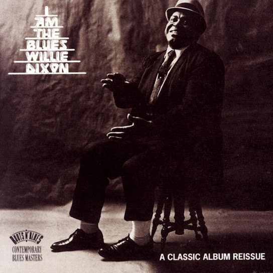
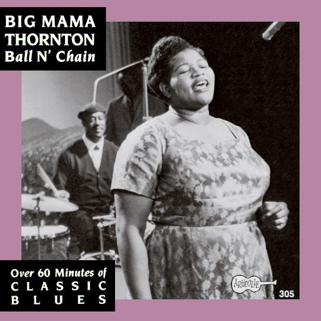
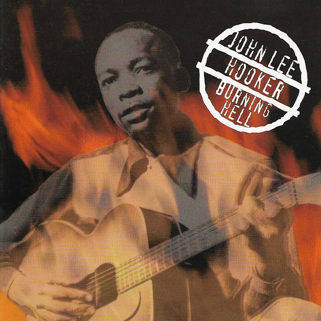
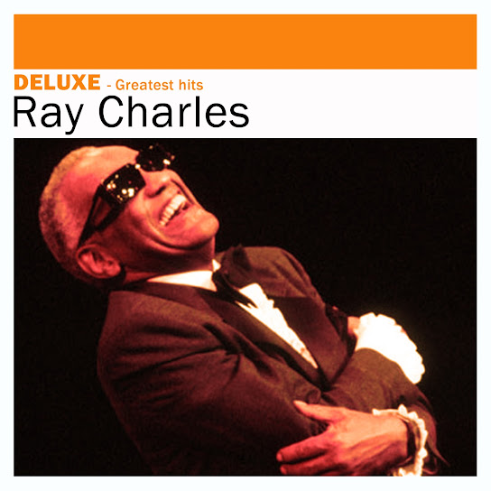
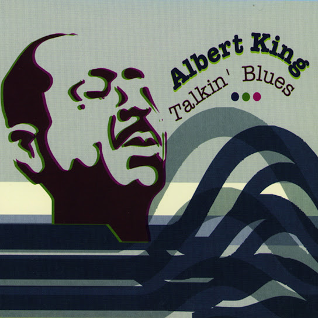
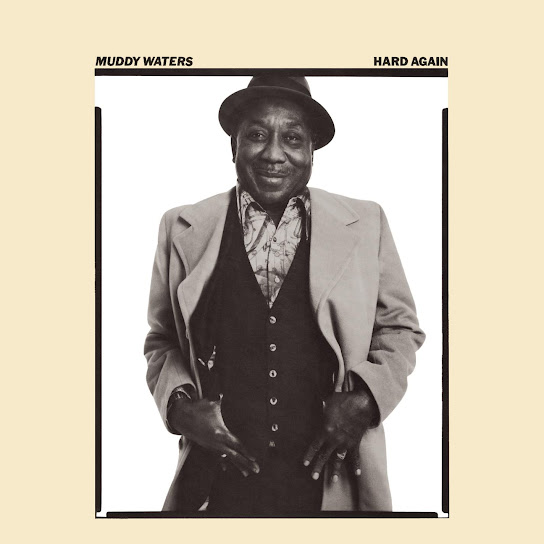
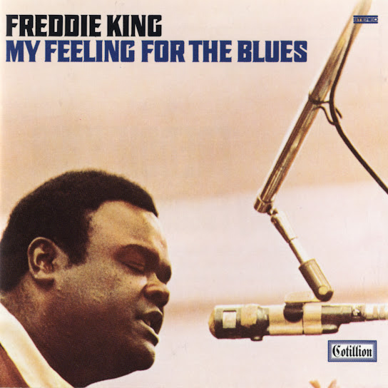
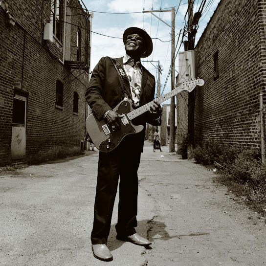
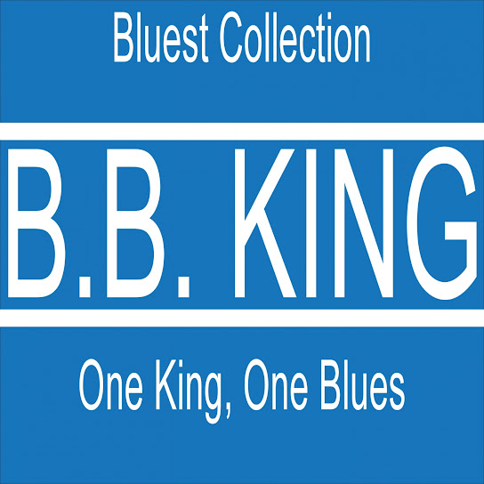

Blues

Back Door Man
1960 • Howlin' Wolf

Ball N' Chain
1968 • Big Mama Thornton

Boogie Chillun
1948 • John Lee Hooker

Georgia On My Mind
1960 • Ray Charles

I Feel Like
1972 • Albert King

Mannish Boy
1955 • Muddy Waters

Strumble
1961 • Freddie King

What Kind of Woman Is This
2004 • Buddy Guy

You Upset My Baby
1954 • B.B. King